Base 01 — Daily Climate time series data (Delhi)
Ficha da base
| Fonte dos dados | Kaggle — "Daily Climate time series data", por sumanthvrao. Dados originalmente coletados via API do Weather Underground. Licença CC0 (domínio público). kaggle.com/datasets/sumanthvrao/daily-climate-time-series-data |
|---|---|
| Variável-alvo | meantemp — temperatura média diária da cidade de Delhi, Índia, calculada a partir de leituras em intervalos de 3 horas ao longo do dia. |
| Unidade | °C (graus Celsius) |
| Frequência | Diária |
| Período coberto | 01/01/2013 a 24/04/2017 (dividido pelo autor original em arquivo de treino, 01/01/2013 a 01/01/2017, e arquivo de teste, 01/01/2017 a 24/04/2017) |
| Nº de observações | 1.462 observações no arquivo de treino + 114 no arquivo de teste ≈ 1.576 registros diários no total |
| Horizonte de previsão definido | h = 1 dia: a previsão do dia t é feita no fim do dia t−1, com informação disponível até ali. |
| Justificativa da escolha da base | Série diária de médio/longo prazo (~4 anos), com sazonalidade anual bem definida na temperatura, umidade, velocidade do vento e pressão atmosférica — variáveis climáticas com forte inter-relação, adequadas para testar modelos univariados (SARIMAX, Holt-Winters) e multivariados (Random Forest com variáveis externas). Dataset público (CC0), amplamente usado como benchmark acadêmico para previsão de séries temporais climáticas. |
Gráfico da série-alvo
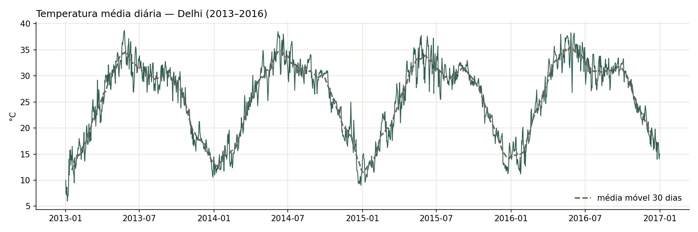
A série tem nível médio de 25,5 °C e varia entre 6 °C (jan/2013) e 38,7 °C (mai/2013). O que domina é um ciclo anual muito regular: o mínimo ocorre em janeiro (média ≈ 13 °C) e o máximo em maio–junho (≈ 33–34 °C). De julho a setembro há um patamar em torno de 30–31 °C, associado à monção, antes da queda para o inverno. A forma do ciclo se repete nos quatro anos, sem quebras estruturais ou mudanças de regime visíveis. A tendência é discreta: as médias anuais ficam em ~25 °C de 2013 a 2015 e sobem para 27,1 °C em 2016, um ano excepcionalmente quente. Com apenas quatro ciclos, não é possível afirmar que isso seja uma tendência de longo prazo.
Variáveis externas
Dicionário de variáveis
| Variável | Descrição | Unidade | Fonte |
|---|---|---|---|
humidity | Umidade relativa média diária do ar | % | Mesmo dataset (Kaggle / Weather Underground) |
wind_speed | Velocidade média diária do vento | km/h | Mesmo dataset (Kaggle / Weather Underground) |
meanpressure excluída | Pressão atmosférica média diária | hPa | Mesmo dataset. Excluída por ter valores fisicamente impossíveis (ver página 3). |
Correlação com meantemp no treino: umidade −0,57 (dias mais quentes são mais secos, exceto na monção) e vento +0,31.
Disponibilidade na data de origem da previsão
| Variável | Disponível no futuro? | Tratamento adotado |
|---|---|---|
humidity |
indisponível — vazamento | Usar só valores defasados. Foram testados lag 1, lags 1–2 e lags 1–7; o escolhido foi lags 1–2 (ontem e anteontem). |
wind_speed |
indisponível — vazamento | Mesmo tratamento da umidade: lags 1–2. |
| Calendário (dia do ano, mês) | conhecida antecipadamente | Usar o valor real, por exemplo como termos de Fourier (seno/cosseno do dia do ano) para representar o ciclo anual |
Umidade e vento são medidos no mesmo dia que a temperatura. No momento da previsão (fim do dia t−1), o valor do dia t ainda não existe, então usar o valor real do dia previsto seria vazamento de informação. Com h = 1, o lag 1 (ontem) é o mais recente disponível. A comparação entre os conjuntos de lags está na página 5.
Gráficos das variáveis externas
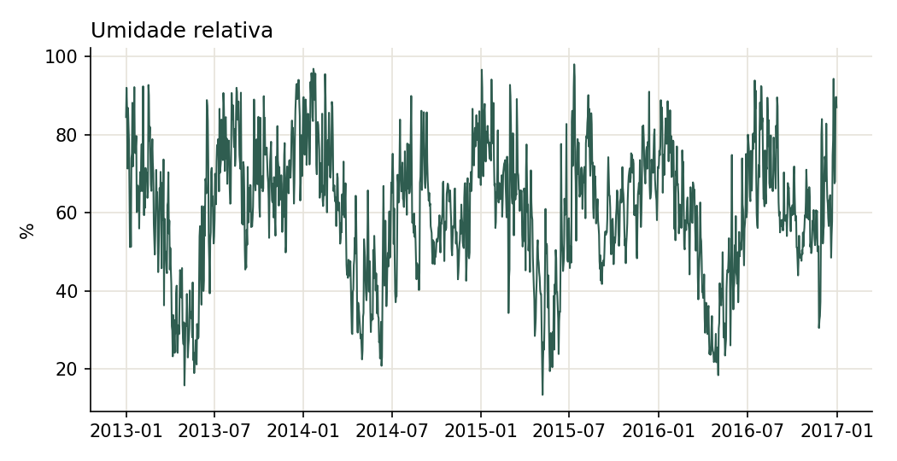
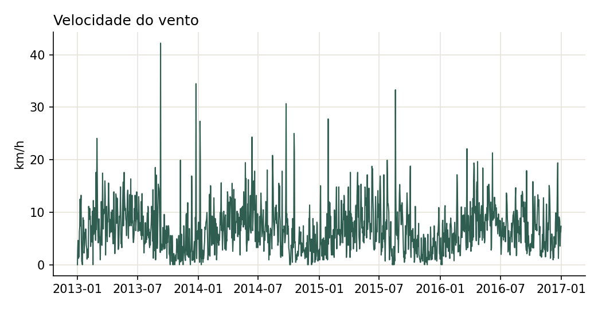
Limpeza e exploração
Diagnóstico
| Valores ausentes | Nenhum valor ausente (NaN) em nenhuma coluna. Porém wind_speed tem 26 dias com valor exatamente 0, o que pode indicar falha de registro. |
|---|---|
| Duplicidades | Nenhuma linha ou data duplicada. |
| Irregularidades temporais | Frequência diária contínua, sem datas faltantes entre 01/01/2013 e 01/01/2017 (1.462 dias). A última linha (01/01/2017) é um registro incompleto (umidade 100%, vento 0, temperatura 10 °C) e é a mesma data do início do arquivo de teste. |
| Valores atípicos (outliers) | Método: regra do IQR (fora de Q1 − 1,5·IQR ou Q3 + 1,5·IQR). • meantemp: 0 outliers.• humidity: 2 (valores baixos, 13–16%). São plausíveis no pré-monção e foram mantidos.• wind_speed: 30 (entre 18 e 42 km/h). São rajadas plausíveis e foram mantidas.• meanpressure: 9 valores fora do IQR, quase todos fisicamente impossíveis (−3, 12, 310, 634, 938, 946, 1.350, 1.353 e 7.679 hPa). A coluna foi excluída. |
Decisões de limpeza e transformação
A série-alvo não precisou de limpeza: não há ausentes, duplicatas ou lacunas de datas, e nenhum valor fica fora do IQR. Foram tomadas três decisões.
1. Exclusão de meanpressure. A coluna tem valores impossíveis para a pressão ao nível do mar, que normalmente fica entre ~990 e 1.030 hPa. Alguns chegam a ser negativos ou maiores que 7.000 hPa, o que indica erro de coleta. Como a correlação física com a temperatura já é parcialmente captada pela umidade e pelo vento, optou-se por excluir a variável em vez de tentar corrigi-la.
2. Remoção da última linha (01/01/2017). O registro é incompleto e coincide com a primeira data do arquivo de teste. Mantê-lo criaria um ponto artificial no fim do treino e uma sobreposição entre treino e teste. O treino ficou com 1.461 observações (01/01/2013 a 31/12/2016).
3. Sem transformação da variável-alvo. A temperatura é aditiva e a amplitude do ciclo anual é estável entre os anos, então não foi aplicado log nem Box-Cox. Os outliers de umidade e vento foram mantidos por serem fisicamente plausíveis.
Decomposição STL
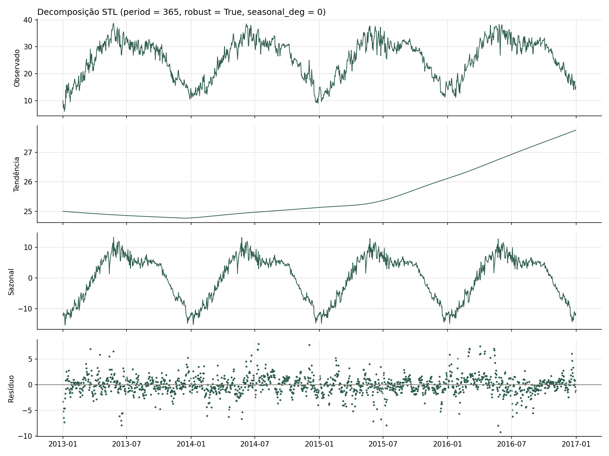
period = 365 (série diária, ciclo anual), robust = True e seasonal_deg = 0.Escolha dos parâmetros. O período é 365 porque a série é diária e o ciclo é anual. Com apenas 4 anos, cada subsérie sazonal (um mesmo dia do ano em anos diferentes) tem só 4 pontos. Com o ajuste linear padrão, a componente sazonal acabava absorvendo quase todo o ruído do primeiro e do último ano. O ajuste localmente constante (seasonal_deg = 0) deixa o resíduo com variância parecida em todos os anos (desvio-padrão entre 1,7 e 2,1 °C). A opção robust = True reduz a influência de dias atípicos.
Tendência
| Período | Comportamento | Nível da tendência | Inclinação média |
|---|---|---|---|
| jan/2013 – dez/2013 | Queda leve (quase estável) | 25,0 → 24,8 °C (−0,2 °C) | −0,02 °C/mês |
| dez/2013 | Mudança de direção: mínimo de 24,77 °C em 15/12/2013 | — | — |
| dez/2013 – mai/2015 | Crescimento lento (quase estável) | 24,8 → 25,3 °C (+0,5 °C) | +0,03 °C/mês |
| jun/2015 – dez/2016 | Crescimento forte e contínuo | 25,3 → 27,7 °C (+2,5 °C) | +0,13 °C/mês |
A tendência só troca de direção uma vez, no fim de 2013: cai levemente ao longo de 2013 e sobe a partir daí. Em meados de 2015 a subida acelera (a inclinação fica cerca de quatro vezes maior), mas continua positiva. Ao todo, a variação é de apenas ~3 °C em quatro anos, pequena perto da amplitude sazonal (~22 °C). A subida forte coincide com 2016, um ano excepcionalmente quente, e com só quatro ciclos não dá para distinguir uma tendência de longo prazo de uma variação entre anos.
Sazonalidade
O ciclo é anual (período de 365 dias), grande e muito regular: suavizada em 30 dias, a componente sazonal vai de ≈ −12,6 °C (início de janeiro) a ≈ +9,5 °C (início de junho), uma amplitude de aproximadamente 22 °C (nos valores diários os extremos chegam a −15,4 e +13,3 °C). O formato é assimétrico e se repete nos quatro anos. A temperatura sobe gradualmente de janeiro a maio, atinge o pico antes da monção, cai um pouco e forma um patamar de julho a setembro, e desce rápido de outubro a dezembro. Parte do ruído diário continua aparecendo na componente sazonal, porque há poucos ciclos para suavizá-la.
Resíduo
O resíduo fica centrado em zero, com desvio-padrão de ~1,9 °C e sem padrão sazonal visível. Os testes ADF (p ≈ 1e-18) e KPSS (estatística 0,07 < 0,347) concordam que ele é estacionário. Existem picos isolados de −9 a +8 °C, provavelmente frentes frias, ondas de calor ou dias de chuva forte. Cerca de 36 dias (2,5%) passam de 3 desvios-padrão.
Força da sazonalidade / tendência
Calculadas a partir dos componentes do STL: FS = max(0, 1 − Var(Rt) / Var(St + Rt)) e FT = max(0, 1 − Var(Rt) / Var(Tt + Rt)). Valores próximos de 1 indicam componente forte; próximos de 0, fraco.
| Métrica | Valor | Interpretação |
|---|---|---|
| Força da tendência | 0,19 | Fraca: a tendência explica pouco da variação além do resíduo. |
| Força da sazonalidade | 0,93 | Muito forte: o ciclo anual é o principal componente da série e deve ser modelado explicitamente. |
Estacionariedade e ordem de diferenciação
| Série | ADF (p-valor) | KPSS (estatística) | Conclusão |
|---|---|---|---|
| Original | 0,22 — não rejeita H0 | 0,19 < 0,347 — não rejeita H0 | Os testes discordam. A ACF tem forma senoidal (−0,64 no lag 182, +0,68 no lag 365): a persistência vem da sazonalidade determinística, não de uma raiz unitária clara. |
| 1ª diferença | ≈ 2e-29 — rejeita H0 | 0,15 < 0,347 — não rejeita H0 | Estacionária (d = 1). |
A 1ª diferença deixa a série estacionária, mas não remove a sazonalidade anual. A diferenciação sazonal (lag 365) custaria um dos quatro anos de dados, por isso a proposta é tratar o ciclo com termos de Fourier ou dessazonalizar pelo STL. Na série diferenciada, a ACF é significativa nos lags 1 a 3 (−0,16; −0,08; −0,13) e a PACF decai aos poucos, o que indica um componente MA. Os candidatos são ARIMA(0,1,1), (0,1,3), (1,1,1) e (3,1,0).
Feature engineering
Features construídas
Com h = 1, toda feature da linha do dia t usa só informação até t−1. A única exceção é o calendário, que é conhecido antecipadamente. As janelas móveis são calculadas sobre a série deslocada em 1 dia (shift(1) antes do rolling), para terminarem em t−1.
| Tipo | Descrição | Usada em quais modelos |
|---|---|---|
| Lags da variável-alvo | Temperatura de 1 a 7 dias atrás (todos os lags da última semana), 14 e 30 dias atrás | RF, XGBoost |
| Lags de variáveis externas | humidity e wind_speed de ontem e anteontem (lags 1–2). Lag 1 e lags 1–7 também foram testados. | RF, XGBoost, SARIMAX (exógenas) |
| Estatísticas de janela móvel | Média, desvio-padrão, mínimo e máximo da temperatura nos últimos 7 e 30 dias | RF, XGBoost |
| Features de calendário | Só o dia do ano, em encoding cíclico. Dia da semana e feriados não entram: não há motivo físico para a temperatura seguir o calendário civil. | RF, XGBoost |
| Encoding cíclico | Seno e cosseno do dia do ano (período de 365,25 dias), representando o ciclo anual | RF, XGBoost |
| Outras features criadas | Variação de ontem em relação a anteontem (lag1 − lag2) | RF, XGBoost |
Uma checagem automática no notebook altera todos os valores de um dia t e confirma que nenhuma feature da linha t muda, só as das linhas seguintes. Isso garante que não há vazamento do próprio dia.
Escolha dos lags das variáveis externas
Comparação feita sem tocar no bloco de teste: Random Forest com hiperparâmetros fixos (300 árvores, min_samples_leaf = 2), walk-forward diário em 2016 com h = 1 e reajuste a cada 7 dias. Foram testados dois modos de alvo: nível, em que a árvore prevê yt, e diferença, em que prevê yt − yt−1 e soma a temperatura de ontem.
| Configuração | MAE 2016 (°C) | MAE jan–abr/2016 (°C) |
|---|---|---|
| RF diferença — ontem + anteontem (lags 1–2) | 1,219 | 1,094 |
| RF diferença — semana (lags 1–7) | 1,221 | 1,110 |
| RF diferença — ontem (lag 1) | 1,226 | 1,129 |
| Persistência (yt−1) | 1,226 | 1,123 |
| RF diferença — sem externas | 1,242 | 1,153 |
| RF nível — semana (lags 1–7) | 1,276 | 1,211 |
| RF nível — ontem (lag 1) | 1,278 | 1,231 |
| RF nível — ontem + anteontem (lags 1–2) | 1,279 | 1,202 |
| RF nível — sem externas | 1,283 | 1,257 |
O modo diferença ganha em todos os conjuntos, porque árvores não extrapolam além dos valores vistos no treino. As externas defasadas reduzem o erro: de 1,242 sem externas para 1,219 com os lags 1–2. A semana inteira não melhora em relação aos lags 1–2 e acrescenta 10 colunas, então o conjunto escolhido é ontem + anteontem. A persistência (amanhã = hoje) é uma referência difícil de bater com h = 1: sem otimização, só o RF em diferença com externas fica abaixo dela, e por pouco. O grid search precisa superar essa marca. Os outros conjuntos e o modo nível continuam como opções no grid search.
Tratamento de NA gerado pelos lags/janelas
Os NAs aparecem só nos 30 primeiros dias da série, porque a maior exigência de histórico é a janela e o lag de 30 dias. Essas linhas são descartadas como período de warm-up, e todos os conjuntos de features usam as mesmas linhas, de 31/01/2013 em diante (1.431 dias de treino). O arquivo de teste é concatenado ao treino antes de criar as features, então os lags do início de 2017 usam os últimos dias de 2016 e o bloco de teste fica completo (114 dias, sem NAs).
Random Forest e XGBoost usam exatamente a mesma tabela de features. O SARIMAX recebe só as externas defasadas como exógenas, porque os termos AR/MA já fazem o papel dos lags do alvo. O Holt-Winters é a referência univariada e não usa features.
Protocolo walk-forward
| Janela inicial de treino | Expansiva. Na validação, começa com 31/01/2013 a 31/12/2015 (1.065 dias, depois do warm-up de 30 dias das features). No teste, começa com 31/01/2013 a 31/12/2016 (1.431 dias). |
|---|---|
| Horizonte de previsão | h = 1 dia: na origem t (fim do dia t−1) prevê-se o dia t |
| Passo de avanço | 1 dia. A cada 7 dias o modelo é reajustado com todo o histórico anterior. Nos dias intermediários ele continua prevendo 1 dia à frente com os valores reais que vão chegando, mas sem reestimar os coeficientes. |
| Nº de origens de previsão (folds) | Validação: 121 origens (18 reajustes). Teste: 114 origens (17 reajustes). |
| Datas de origem | Todos os dias de 01/01 a 30/04/2016 (validação) e de 01/01 a 24/04/2017 (teste) |
| Conjunto de teste final | 01/01 a 24/04/2017: o arquivo de teste original do dataset, usado uma única vez, com os hiperparâmetros já fixos |
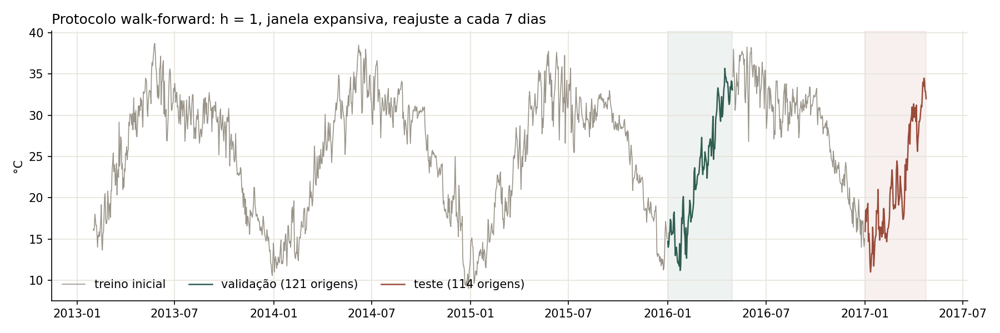
Justificativa e regras
Validação em jan–abr/2016. É a mesma época do ano do teste (subida da temperatura depois do inverno), então o MAE usado para escolher os hiperparâmetros fica comparável ao que se espera no teste. Toda a escolha de hiperparâmetros acontece nessa janela, sem tocar no bloco de teste.
Reajuste a cada 7 dias. O reajuste diário seria mais fiel, mas tornaria o grid search do SARIMAX inviável. Com reajuste semanal, a previsão continua sendo diária e sempre usa os valores reais até a véspera. Só os coeficientes ficam fixos por até 6 dias.
Mesmo protocolo para os 4 modelos. SARIMAX, Holt-Winters, Random Forest e XGBoost usam as mesmas origens, o mesmo horizonte, o mesmo calendário de reajuste e o mesmo bloco de teste, por meio de uma única função de walk-forward no notebook. Os modelos estatísticos preveem os dias intermediários com a filtragem 1 passo à frente, com os parâmetros do último reajuste.
Referência. A persistência (amanhã = hoje) tem MAE de 1,123 °C na validação. Esse é o piso que os quatro modelos precisam superar.
Modelos e hiperparâmetros
Critério único para todos os modelos: MAE do walk-forward nas 121 origens de validação (jan–abr/2016). O bloco de teste não é usado para nenhuma decisão.
Modelos de referência (base models)
Previsões simples 1 passo à frente, que usam só os valores reais até a véspera. Cada uma tem um parâmetro escolhido pela validação e serve de régua para os quatro modelos.
| Modelo | Parâmetros testados | Escolhido | MAE validação (°C) |
|---|---|---|---|
| Média Móvel | k ∈ {1, 2, 3, 5, 7, 14, 30} | k = 1 | 1,123 |
| Seasonal Naive | s ∈ {1, 2, 3, 7, 14, 30, 365} | s = 1 | 1,123 |
| Delta | janela ∈ {1, 2, 3, 7, 14, 30} | janela = 30 | 1,125 |
| EMA | α ∈ {0,1; …; 0,9} | α = 0,9 | 1,127 |
| Média Acumulada | — | — | 6,207 |
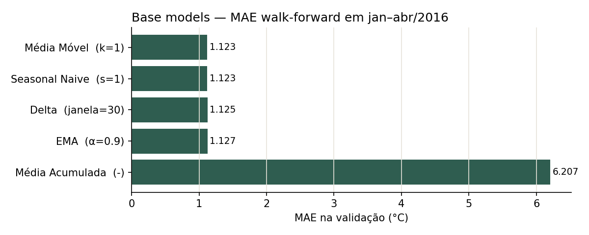
Todos os modelos simples convergem para a persistência (amanhã = hoje): média móvel com k = 1 e seasonal naive com s = 1 são exatamente ela, e a EMA se aproxima à medida que α cresce. O mesmo dia do ano anterior (s = 365) erra 3,3 °C, porque a variação entre anos é grande perto da variação de um dia para o outro. A média acumulada ignora o ciclo anual e erra mais de 6 °C. A régua para os quatro modelos é, portanto, 1,123 °C.
SARIMA (univariado)
| Espaço de busca | p, q ∈ {0, …, 3}; d ∈ {0, 1}; sazonal m = 7 com (P, Q) ∈ {(0,0), (1,0), (0,1), (1,1)}; e diferença anual (0,1,0,365). Total: 160 combinações. |
|---|---|
| Justificativa | q e p até 3: ACF e PACF da 1ª diferença significativas nos lags 1 a 3. d: ADF e KPSS discordam na série original e concordam na 1ª diferença. m = 365: força da sazonalidade 0,93 e pico de +0,68 na ACF no lag 365. P e Q no lag 365 são inviáveis: um único ajuste passou de 9 minutos sem terminar. m = 7: sem evidência na ACF (≈ 0 nos múltiplos de 7); fica no grid para comprovar a ausência. |
| Critério | Triagem por AIC no treino inicial, comparando só modelos com a mesma diferenciação. As 14 configurações com ΔAIC ≤ 2 em relação à melhor do grupo foram para o walk-forward, e a escolha final foi pelo MAE. |
| Configuração final | SARIMA(2,0,1) com constante. MAE de validação: 1,152 °C. |
O termo semanal nunca melhorou o AIC (4.028,7 sem e 4.030,3 com, para d = 0), o que confirma que não há ciclo semanal. A diferença anual deixa a série estacionária, mas dobra a dispersão (dp de 3,0 °C contra 1,7 °C da 1ª diferença). Os modelos com ela erraram de 1,47 a 1,50 °C, bem acima dos sem ela (1,15 a 1,17 °C). Sem externas e sem um tratamento suave da sazonalidade, o melhor SARIMA não supera a persistência.
SARIMAX
| Espaço de busca | p, q ∈ {0, …, 3}; d ∈ {0, 1}; sazonal m = 7 com (P, Q) ∈ {0, 1}² e D = 0; ciclo anual por termos de Fourier com K ∈ {1, 2, 3} harmônicos; externas: nenhuma, ontem (lag 1), ontem + anteontem (lags 1–2) ou semana (lags 1–7). Total: 1.536 combinações. |
|---|---|
| Justificativa | O ciclo anual entra como Fourier porque termos sazonais com m = 365 são inviáveis. K = 1 explica 91,6% da componente sazonal suavizada, K = 2 explica 98,9% e K = 3 explica 99,6%, então o intervalo 1–3 cobre o ponto em que o ganho satura. Os conjuntos de externas são os testados na página 5. p, q, d e m = 7 seguem a mesma evidência do SARIMA. |
| Critério | AIC no treino inicial (dentro de cada d) e depois MAE do walk-forward nas 12 configurações com ΔAIC ≤ 2. BIC registrado para comparação. |
| Variáveis externas incluídas | Umidade e vento de ontem (lag 1), mais Fourier anual com K = 3 |
| Configuração final | SARIMAX(3,1,3) com Fourier K = 3 e externas de ontem. MAE de validação: 1,192 °C. |
O AIC melhorou muito de K = 1 para K = 2 (3.979 → 3.930) e pouco de 2 para 3 (→ 3.921), como a decomposição indicava. A semana inteira de externas teve o pior AIC (3.932, contra 3.921 de ontem + anteontem), e o termo semanal de novo não ajudou.
Validação do modelo.
• Ablação na mesma ordem: sem as externas, o MAE de validação sobe de 1,192 para 1,208 °C. A contribuição de umidade e vento é real, mas pequena.
• Resíduos do ajuste no treino: o Ljung-Box não indica autocorrelação (p = 0,87 no lag 7, 0,54 no lag 14 e 0,58 no lag 30).
• Ressalva: o ajuste dessa ordem não convergiu na triagem por AIC, e 386 das 1.536 combinações também não. No ajuste final, com todo o histórico até 2016, os coeficientes AR/MA ficam bem determinados (p < 0,001, exceto ar.L1).
Holt-Winters (referência univariada)
| Tendência | Testadas: nenhuma, aditiva, multiplicativa, amortecida ou não. Escolhida: multiplicativa amortecida, mas com β = 0 e φ = 0,995 ela fica praticamente constante, o que é coerente com a força de tendência de 0,19. As cinco opções de tendência empataram (1,116 a 1,118 °C). |
|---|---|
| Sazonalidade | Testadas: nenhuma, aditiva e multiplicativa. Escolhida: aditiva, coerente com a amplitude estável do ciclo. A multiplicativa errou 1,435 °C. |
| Período sazonal | Testados: 365 e 7. Escolhido: 365. O período 7 ficou entre 1,20 e 1,23 °C. |
| Parâmetros de suavização | α = 0,766 (o nível acompanha de perto a temperatura recente), β = 0, γ = 0,05 e φ = 0,995. α, β e φ foram estimados por máxima verossimilhança; γ fez parte do grid. |
| Inicialização | Perfil de Fourier (K = 2), ajustado só no histórico de cada reajuste, contra a inicialização heurística |
Com a inicialização heurística, a sazonalidade anual piorava o modelo (1,358 °C): cada um dos 365 índices sazonais é visto só 3 vezes no treino e nasce com o ruído diário embutido. Iniciando os índices por um perfil suave e limitando γ, o MAE cai para 1,116 °C, o único modelo estatístico abaixo da persistência na validação. Com o ponto de partida limpo, o γ estimado livremente cai de 0,17 para 0,056.
Random Forest
| Espaço de busca | max_depth ∈ {None, 8, 15}; min_samples_split ∈ {2, 10}; min_samples_leaf ∈ {1, 4, 10}; max_features ∈ {sqrt, 0,5, 1,0}; modo do alvo ∈ {nível, diferença}. São 108 combinações com 300 árvores; depois, n_estimators ∈ {100, 300, 600} na melhor. |
|---|---|
| Método de otimização | Grid search em duas etapas com MAE do walk-forward na validação. n_estimators fica para a segunda etapa porque mais árvores só reduzem a variância e o ganho satura (100: 1,063; 300: 1,059; 600: 1,061). |
| Configuração final | max_depth = None, min_samples_split = 10, min_samples_leaf = 10, max_features = 1,0, 300 árvores, modo diferença. MAE de validação: 1,059 °C. |
O modo do alvo é o hiperparâmetro que mais pesa: 1,078 °C em média no modo diferença contra 1,219 no modo nível. Folhas grandes (min_samples_leaf = 10) foram as melhores em média (1,140 contra 1,158 com folha 1), porque evitam que as árvores decorem o ruído diário.
Modelo de especialização — XGBoost Regressor
| Principais hiperparâmetros | max_depth (ordem das interações), learning_rate e n_estimators (tamanho do passo e número de árvores, em conjunto), subsample e colsample_bytree (aleatoriedade por árvore), min_child_weight (peso mínimo por folha), reg_lambda (regularização L2) e modo do alvo |
|---|---|
| Intervalos testados | max_depth ∈ {3, 5, 7}; learning_rate ∈ {0,03, 0,1}; n_estimators ∈ {300, 800}; subsample ∈ {0,7, 1,0}; colsample_bytree ∈ {0,7, 1,0}; min_child_weight ∈ {1, 5}; reg_lambda ∈ {1, 10}; modo ∈ {nível, diferença}. Depois, reg_lambda refinado em {1; 3,3; 10; 30; 100}. |
| Método de busca | Grid search com 384 combinações e MAE do walk-forward na validação, mais o refino da regularização L2 em torno do melhor valor |
| Configuração final | max_depth = 5, learning_rate = 0,03, 300 árvores, subsample = 1,0, colsample_bytree = 0,7, min_child_weight = 5, reg_lambda = 30, modo diferença. MAE de validação: 1,041 °C. |
Tudo o que regulariza ajudou. A taxa de aprendizado menor ganhou (1,171 contra 1,230 em média), assim como menos árvores (300: 1,183; 800: 1,218), árvores mais rasas (profundidade 3: 1,185; 7: 1,215) e L2 mais forte (10: 1,193; 1: 1,208), e o refino levou a reg_lambda = 30. Faz sentido: no modo diferença o alvo é a variação de um dia para o outro, que é quase toda ruído.
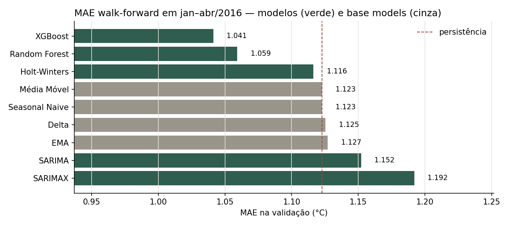
Resultados comparativos (MAE)
Walk-forward nas 114 origens do teste (01/01 a 24/04/2017), com h = 1, reajuste a cada 7 dias e as configurações escolhidas na validação fixas.
| Modelo | MAE teste (°C) | Ranking | MAE validação (°C) | Tempo no teste |
|---|---|---|---|---|
| SARIMAX | 1,243 | 1º | 1,192 | 122 s |
| Holt-Winters | 1,305 | 2º | 1,116 | 4 s |
| Random Forest | 1,312 | 3º | 1,059 | 112 s |
| Persistência (referência) | 1,314 | — | 1,123 | — |
| SARIMA (univariado) | 1,336 | 4º | 1,152 | 15 s |
| XGBoost (especialização) | 1,343 | 5º | 1,041 | 19 s |
Arquivo consolidado: temperatura/mae_temperatura.csv. Previsões e resíduos dia a dia: temperatura/resultados_teste.csv.
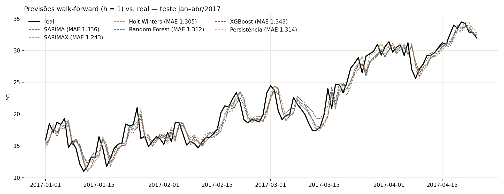
Discussão
O SARIMAX venceu, com 1,243 °C, 5,4% abaixo da persistência. É o modelo que combina explicitamente os dois traços mais fortes da série: o ciclo anual, que responde por 93% da variação (força da sazonalidade de 0,93), entra como uma curva suave de Fourier, e a persistência diária entra pelos termos ARIMA. Com isso, ele é o mais preciso em janeiro (1,33 °C), fevereiro (1,08 °C) e abril (0,90 °C), e é o único com viés levemente negativo (−0,12 °C).
A ordem da validação não se repetiu no teste. XGBoost e Random Forest foram os melhores na validação (1,041 e 1,059 °C) e ficaram em 5º e 3º no teste, no nível da persistência ou acima dela. O SARIMAX, pior na validação, foi o melhor no teste. Três fatores ajudam a explicar:
- As diferenças são pequenas. No teste, os seis modelos ficam numa faixa de 0,10 °C, menos de 10% do erro médio. Com 121 dias de validação, essa ordem é instável.
- Otimismo da seleção nas árvores. O XGBoost escolheu entre 384 configurações, e o Random Forest entre 108, usando os mesmos 121 dias. Quanto mais configurações se compara, mais o MAE de validação da vencedora tende a subestimar o erro futuro. O SARIMAX, mais rígido, sofre menos com isso.
- O teste foi mais difícil. A própria persistência piorou de 1,123 °C (jan–abr/2016) para 1,314 °C (jan–abr/2017): houve mais variação de um dia para o outro, principalmente em janeiro e março.
Relação com as características da base. Com h = 1, a temperatura de ontem já carrega quase toda a informação, e todos os modelos ficam perto da persistência. O ganho possível está em antecipar parte da variação diária. As externas ajudam pouco: só o vento tem efeito consistente (página 10). A amostra é curta para modelos flexíveis: são 4 ciclos anuais, e cada dia do ano é visto só 3 vezes antes da validação.
A diferença entre o SARIMAX e a persistência (0,07 °C) não passou por teste de significância. Um teste de Diebold-Mariano sobre os erros diários seria o próximo passo para afirmar que a vantagem não é ruído.
Análise dos resíduos
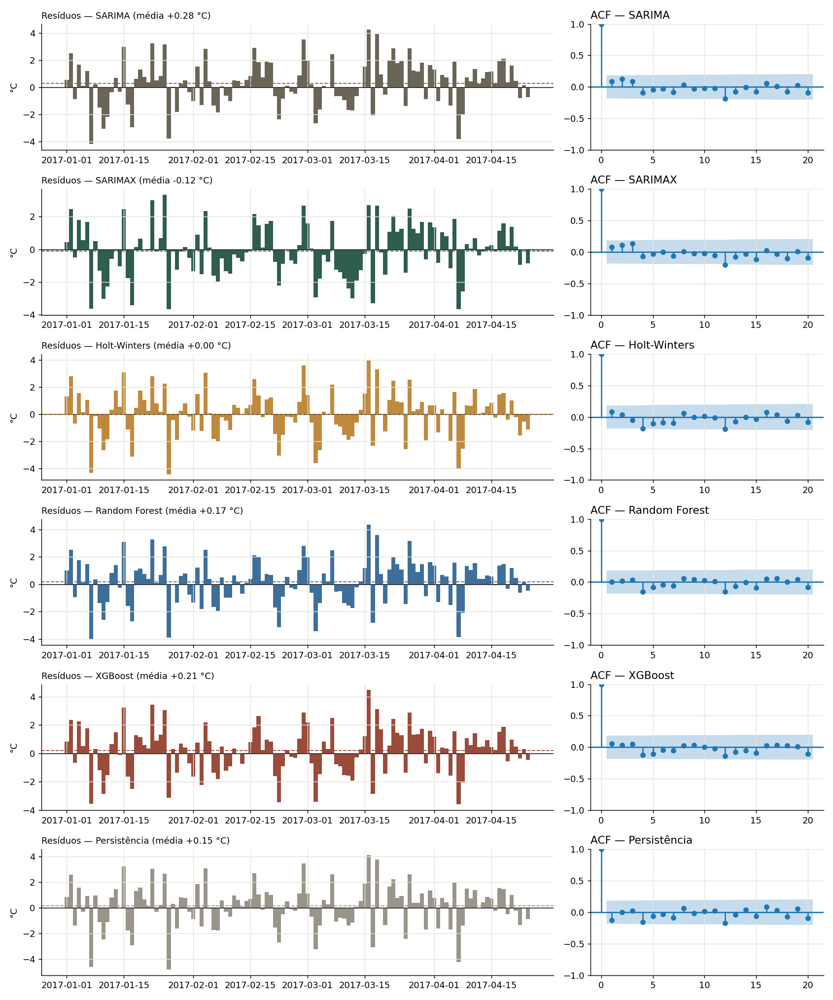
| Modelo | Ljung-Box lag 7 (p-valor) | Ljung-Box lag 14 (p-valor) | Viés (°C) | dp (°C) | ACF lag 1 | Interpretação |
|---|---|---|---|---|---|---|
| SARIMAX | 5,25 (0,63) | 12,17 (0,59) | −0,12 | 1,58 | 0,08 | Sem autocorrelação; menor dispersão |
| Holt-Winters | 8,51 (0,29) | 14,41 (0,42) | 0,00 | 1,69 | 0,09 | Sem autocorrelação; sem viés |
| Random Forest | 4,46 (0,73) | 8,95 (0,83) | +0,17 | 1,63 | 0,00 | Sem autocorrelação; prevê abaixo do real |
| XGBoost | 4,62 (0,71) | 8,47 (0,86) | +0,21 | 1,65 | 0,05 | Sem autocorrelação; prevê abaixo do real |
| SARIMA | 5,81 (0,56) | 11,55 (0,64) | +0,28 | 1,67 | 0,09 | Sem autocorrelação; maior viés |
| Persistência | 6,04 (0,54) | 10,78 (0,70) | +0,15 | 1,69 | −0,12 | Referência |
Ljung-Box com H0: resíduos sem autocorrelação até o lag indicado. Com 114 pontos, usam-se os lags 7 e 14. Tabela completa em temperatura/ljung_box_temperatura.csv.
Discussão
Autocorrelação. Nenhum modelo deixou estrutura temporal nos resíduos: todos os p-valores do Ljung-Box ficam acima de 0,29, e as ACFs não têm picos fora da banda. Ou seja, nenhum modelo deixou de usar informação do passado recente. O que sobra é a variação do dia, que os dados disponíveis não antecipam. Um p-valor alto indica ausência de evidência de autocorrelação, não prova de independência, ainda mais com 114 pontos.
Viés. SARIMA (+0,28 °C), XGBoost (+0,21) e Random Forest (+0,17) preveem, em média, abaixo do real: entre 60% e 62% dos dias foram subestimados. O teste é a época de subida da temperatura depois do inverno, e esses modelos chegam com atraso à subida contínua. O Holt-Winters não tem viés (0,00), e o SARIMAX tem um viés pequeno no sentido oposto (−0,12), graças à curva sazonal explícita, que já "sabe" que a temperatura sobe nessa época.
Variabilidade. O desvio-padrão fica entre 1,58 (SARIMAX) e 1,69 °C, e os erros extremos chegam a ±4,5 °C nas viradas bruscas (frentes frias e dias de chuva). O erro médio muda com a época: é maior em janeiro (1,33 a 1,51 °C) e março (1,46 a 1,62 °C), com as quedas bruscas de temperatura, e menor em abril (0,90 a 1,13 °C), quando a subida é mais regular.
Persistência como contraste. Só ela tem ACF negativa no lag 1 (−0,12). Depois de uma virada, ela erra duas vezes seguidas em sentidos opostos. Os modelos eliminam esse padrão (ACF entre 0,00 e 0,09), sinal de que aprenderam a corrigir parte do movimento de ontem.
Os modelos só repetem ontem? Não, mas ficam ancorados nele. Na validação, XGBoost e Random Forest mudam a previsão em relação a ontem em ~80% dos dias e acertam a direção da variação em 69% e 71% dos dias com variação acima de 0,5 °C (o acaso daria 50%). Porém preveem variações médias de 0,29 a 0,34 °C, contra 1,12 °C de variação real. Com informação fraca sobre o dia seguinte, ficar perto de ontem é o que minimiza o MAE.
Importância das features
Modelos finais reajustados em todo o histórico anterior ao teste (31/01/2013 a 31/12/2016), com os hiperparâmetros fixos. A permutação foi avaliada no teste, com o MAE como métrica, no mesmo espaço de alvo do modelo (diferença). Como os lags e as janelas da temperatura são muito correlacionados entre si, também se embaralham juntas as colunas de cada grupo. As externas aparecem em terracota.
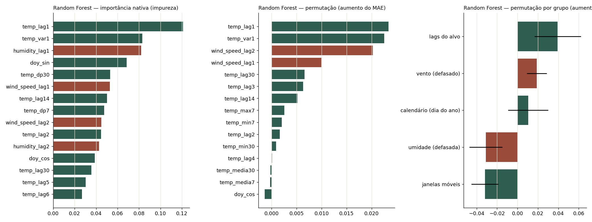
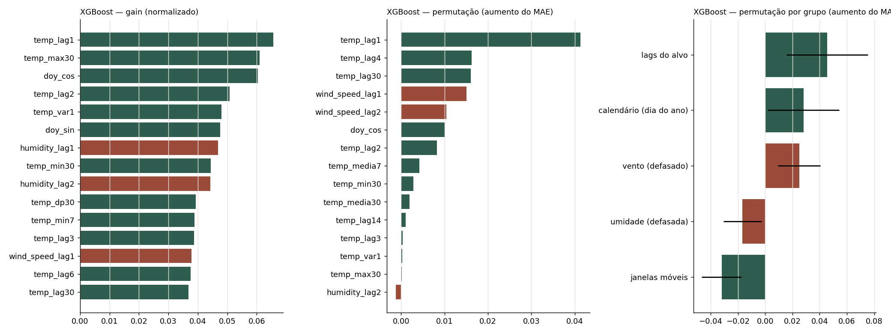
| Grupo (permutação conjunta) | Random Forest: aumento do MAE (°C) | XGBoost: aumento do MAE (°C) |
|---|---|---|
| Lags do alvo | +0,039 | +0,046 |
| Vento (defasado) | +0,019 | +0,025 |
| Calendário (dia do ano) | +0,010 | +0,028 |
| Umidade (defasada) | −0,031 | −0,017 |
| Janelas móveis | −0,032 | −0,032 |
SARIMAX — coeficientes das variáveis externas
| Variável | Coeficiente | Magnitude (°C por dp) | Sinal | Significância |
|---|---|---|---|---|
wind_speed_lag1 (vento de ontem) | −0,026 | −0,12 | − | p = 0,017 — significativo |
humidity_lag1 (umidade de ontem) | +0,003 | +0,06 | + | p = 0,567 — não significativo |
| Fourier cos1 (ciclo anual) | −9,311 | −6,53 | − | p < 0,001 |
| Fourier sin2 / cos2 | −1,674 / −2,492 | −1,19 / −1,75 | − | p < 0,001 |
O 1º harmônico anual domina: ele sozinho desloca a previsão em 6,5 °C por desvio-padrão, contra 0,12 °C do vento. Os harmônicos 2 e 3 dão a assimetria do ciclo, com o patamar da monção e a queda rápida no outono.
Holt-Winters — componentes
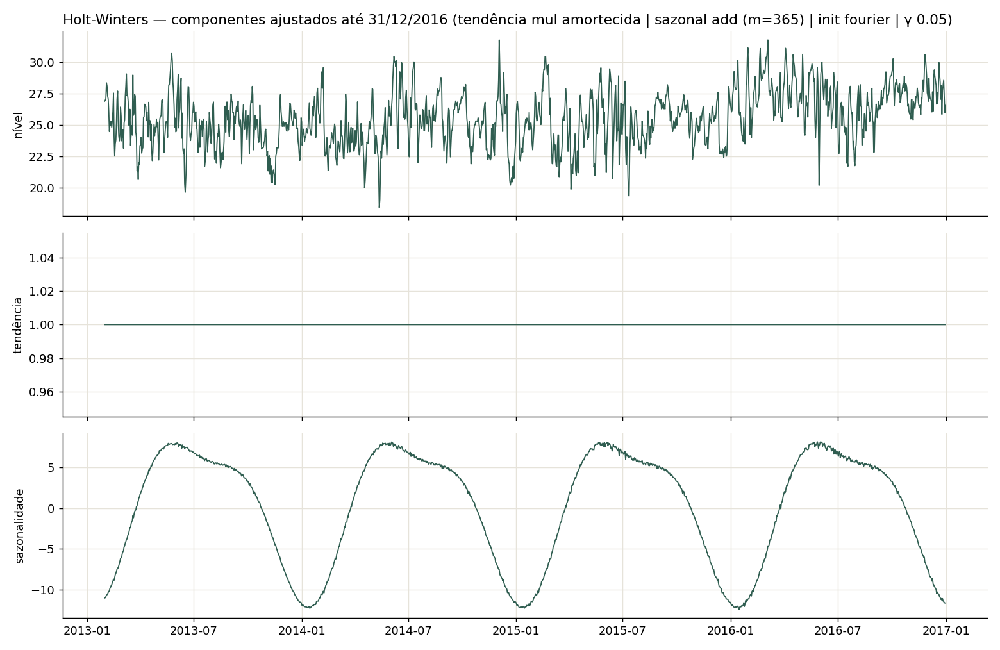
O Holt-Winters não tem features. Com α = 0,77, o nível segue de perto a temperatura dos últimos dias. Com β = 0 e φ = 0,995, a tendência é praticamente constante. Com γ = 0,05, o perfil sazonal anual muda devagar e preserva a forma suave dada pela inicialização de Fourier.
Papel das variáveis externas
O vento de ontem é a única externa útil nos três modelos. Ele aumenta o MAE quando embaralhado no Random Forest (+0,019 °C) e no XGBoost (+0,025), e é significativo no SARIMAX, com sinal negativo: mais vento hoje antecede um dia seguinte um pouco mais frio, o que é coerente com a chegada de frentes.
A umidade não ajudou no teste. Embaralhá-la reduz o MAE nas duas árvores (−0,031 e −0,017), e o coeficiente dela no SARIMAX não é significativo. A correlação de −0,57 com a temperatura é, em boa parte, sazonal (seca no pré-monção, úmida no inverno e na monção), e essa informação já chega pelo calendário e pelos lags. As janelas móveis mostram o mesmo padrão: repetem o que os lags já informam e acabam acrescentando ruído.
Disponibilidade na data da previsão. Todas as externas entram defasadas: só os valores de ontem (e de anteontem, nas árvores), medidos antes da origem da previsão. Nenhum modelo usa a umidade ou o vento do dia previsto, e a checagem automática da página 5 confirma que nenhuma feature depende do próprio dia t. Uma previsão meteorológica disponível na origem poderia melhorar os resultados, mas teria que ser identificada como previsão.
Os resultados de importância vêm do bloco de teste e servem só para interpretação. Tirar a umidade ou as janelas com base neles seria usar o teste para tomar decisões. Essa escolha, se for feita, deve passar pela validação.
Conclusão desta base
Melhor modelo
O SARIMAX(3,1,3) com Fourier anual (K = 3) e umidade e vento de ontem teve o menor erro no teste: 1,243 °C, contra 1,314 °C da persistência. Ele vence porque representa de forma explícita e suave o ciclo anual, que é a característica dominante da série (FS = 0,93), e deixa os termos ARIMA cuidarem da dinâmica de curto prazo. Foi também o modelo com menor dispersão e menor viés nos resíduos.
Principais limitações
- Teto imposto pelo horizonte. Com h = 1, todos os modelos ficam a menos de 0,1 °C da persistência. As viradas bruscas (frentes frias, chuva) não aparecem nos dados do dia anterior, e são elas que concentram os maiores erros.
- Ordem instável entre validação e teste. As árvores lideraram a validação e não confirmaram no teste. Com diferenças tão pequenas, 121 dias de validação não bastam para ordenar os modelos com segurança.
- Poucos ciclos. Com 4 anos, cada dia do ano é visto 3 vezes antes da validação. Isso inviabiliza a sazonalidade m = 365 no SARIMA, prejudica o Holt-Winters com inicialização padrão e torna a diferença anual ruidosa.
- Teste curto e sazonalmente concentrado. Jan–abr/2017 cobre só a fase de subida da temperatura. Não há como saber, por exemplo, o desempenho na monção.
- Convergência. Parte do grid do SARIMAX não convergiu (386 de 1.536 combinações), inclusive a ordem escolhida, na triagem.
Decisões metodológicas que precisaram de ajuste
meanpressureexcluída por valores fisicamente impossíveis, e a última linha do treino removida por estar incompleta e coincidir com o início do teste.- Sazonalidade anual tratada sem m = 365: Fourier no SARIMAX, diferença anual testada no SARIMA, e inicialização por perfil de Fourier com γ no grid no Holt-Winters.
- Árvores no modo diferença (prevendo a variação em relação a ontem), porque árvores não extrapolam o nível. Esse foi o hiperparâmetro de maior efeito nas duas.
- Externas só defasadas, já que umidade e vento do dia previsto não são conhecidos na origem. No fim, só o vento mostrou valor.